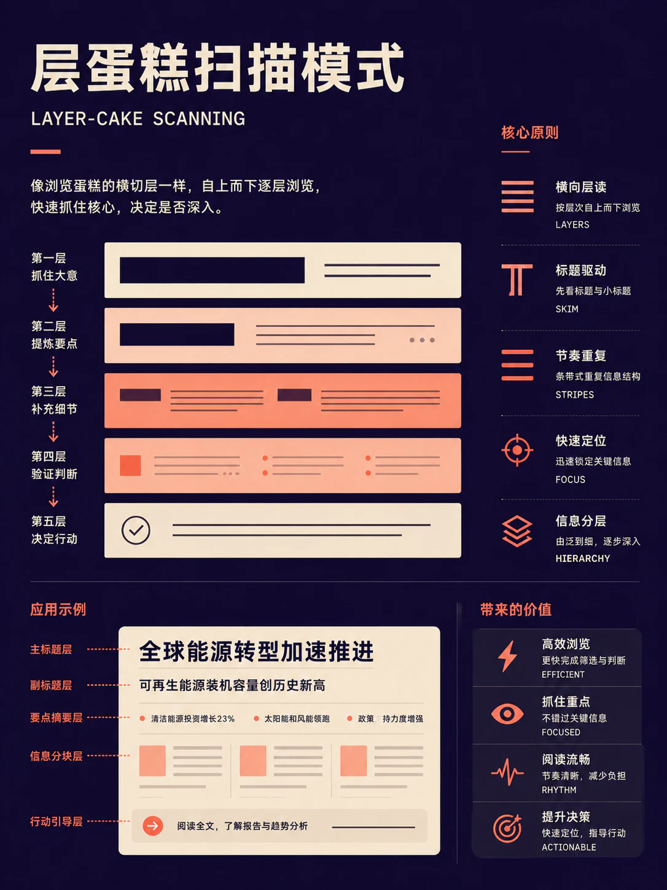

蛋糕与奶油：扫读机制
THE CAKE & THE FROSTING
为什么叫「层蛋糕」？尼尔森诺曼集团（NN/g）在眼动追踪热图里看到一种标志性画面：当页面用醒目、言之有物的小标题切开长文，读者的视线几乎全部横向落在标题与小标题上，形成一条条密集的水平热力带（蛋糕胚）；而夹在标题之间的正文段落几乎留白未看（奶油夹层），直到某一条标题正好命中读者的问题，视线才切入正文深读。
这背后是认知省力机制：在线阅读时人往往带着具体任务而来，不愿通读 100% 的文字。层蛋糕把「要不要读」的决策提前交给了小标题——先低成本横扫骨架，再高回报精读单层。
原海报左侧以 第一层 → 第五层 展示了由浅入深的完整漏斗；在真实眼动实测中（Kara Pernice，2019），读者并不一定会按 1 到 5 逐层读完，而是沿标题直接跳过前几段正文，精准切入自己需要的那一层，读完即止或直达行动。
全球能源体系正处于深度结构调整周期，多个主要经济体的电网调度机构在最新年度公报中指出，可再生能源装机容量已经创下历史新高。随着组件制造规模化与逆变器效率进步，风电与光伏的度电成本持续走低。根据本周期统计，清洁能源投资同比增长 23%，太阳能与风能继续领跑新增资金流向。与此同时，多国监管部门相继出台并网优先调度与绿色信贷优惠政策，并网补贴与长期购电协议支持力度显著增强。在区域表现方面，亚太与欧洲市场的分布式屋顶光伏增速最快，电化学储能系统在调峰填谷中的装机比例同步翻倍。如需查阅分国别原始数据表与未来十年装机预测曲线，请点击文末链接下载完整年度趋势报告与方法论附录。
风电与光伏度电成本下行，成为全球电网扩容第一主力。
太阳能和风能领跑资金流入，储能调峰比例同步翻倍。
多国出台并网优先调度、并网补贴与长期购电协议，降低项目融资门槛。
含十年预测曲线与方法论附录 →
对比中缝 52% —— 同一段内容，左半部黏成文字墙，右半部切成标题横带。
一眼定去留：五层示例
FIVE-LAYER ANATOMY
130 原海报下半部把一份能源报告拆成五道水平切层。试着在旁侧关闭或保留任意一层，直接看原海报这张暖奶油卡片在缺层后会发生什么。
全球能源转型加速推进
可再生能源装机容量创历史新高
- 清洁能源投资增长 23%
- 太阳能和风能领跑
- 政策支持力度增强
完整五层（原海报结构）：主标定域 → 副标亮结论 → 摘要降维 → 分块验证 → 底栏收束行动。
标题怎么写：实词与层级
DESCRIPTIVE HEADINGS
层蛋糕最容易踩的坑，是只做了视觉分层、没写好标题本身。在 NN/g 的眼动研究里，如果小标题写成文艺双关或空洞口号，读者哪怕第一眼看到了横带，也无法判断下面藏着什么，只能硬着头皮钻回正文。
好的层蛋糕小标题要同时满足三条经验原则（经验值，视语种微调）：① 前 4–6 个字亮出核心实词，先说主题再说修饰；② 一条标题只管一件事，互不交叉；③ 标题字号至少比正文高出约 1.4–1.8 倍，且段上留白明显大于段下留白，把标题稳稳粘在它统领的那一段上。
不读下面小字，根本猜不到说的是离线草稿上限。
前六个字直击问题，扫一眼即可决定停还是跳。
先用「A · 悬念标题版」点「开始计时找答案」，感受盲搜小字的阻力，再切 B 版对比你的真实毫秒耗时。
你的实测记录：悬念标题版 未测 ｜ 层蛋糕实词版 未测
从哪来：眼动实证脉络
ORIGINS & EYETRACKING
正式命名「层蛋糕扫描模式」
Kara Pernice 在 NN/g 专题文章中正式以「层蛋糕」命名这一热图呈横纹相间的扫读模式。
同一小类的五种页面阅读模式怎么分
缺少小标题分层时的默认退化路径，视线沿顶行与左缘快速衰减。
128 Z 型扫描模式适合内容稀疏的着陆页与海报首屏，视线沿对角斜线收拢到终点。
129 古腾堡图式针对均质大段文本版面的四象限视觉重力分布，从左上落向右下。
靠醒目且实词前置的小标题横带逐层筛选，只切开需要的那一段正文。
跳过线性顺序，直接在页面里捕猎数字、链接、粗体词等孤立锚点。
什么时候用，什么时候别用
WHEN TO USE & WHEN TO AVOID
适合用层蛋糕的场景
- 带问题进站的工具型长文：帮助文档、退换货政策、API 说明与 FAQ。
- 多角色各取所需的报告页：行业趋势报告、SaaS 定价页与长商品详情页。
- 无障碍与长屏阅读体验：需要读屏软件按 H1–H3 标题树快速跳转的长页。
什么时候别用（硬边界）
- 靠悬念推进的文学与故事：小说、散文与影评硬加信息前置小标题等于提前剧透。
- 不允许跳读的合规与安全文本：合同、医疗知情同意书与操作禁忌需要承诺通读。
- 字数极少的单屏主视觉：艺术海报或 80 字短弹窗切五层反而制造噪声（单屏参考 128 Z 型扫描模式）。
年度气候与能源数据报告（长网页）
读者多为高管、记者或研究员，各取所需。
建议做法：每层主副标题直给数字结论。
动手判一判：四选一练习
SINGLE-VARIABLE PRACTICE
情景：同一份《智能门锁安装与售后说明》四节长文，用户刚搬新家，只想在 5 秒内确认「电池没电怎么应急开锁」。下面四个方案正文一字不差，只差「标题层的写法与反差处理」一个变量——哪一版真正做成了层蛋糕扫描？
原海报与关键词
ORIGINAL POSTER & KEYWORDS
